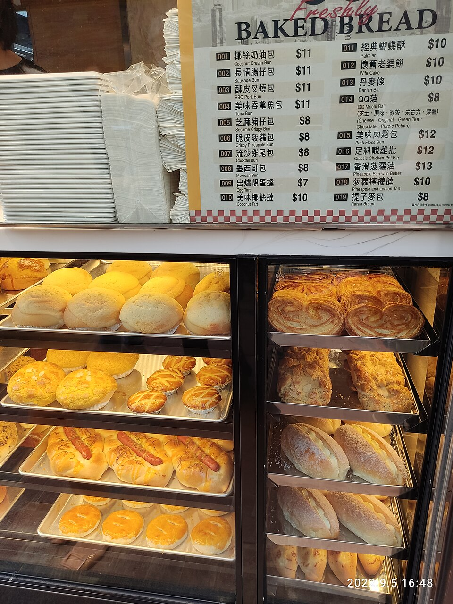

Tortas salgadas
Torta de atum

Ingredientes
- 1 xícara (chá) de farinha de trigo
- ½ xícara (chá) de óleo
- 1 colher (sopa) de fermento em pó
- ½ xícara (chá) de queijo ralado
- 4 ovos
- Pimenta-do-reino e sal
- 2 latas de atum
- 1 cebola picada
- 100 g de sementes de gergelim cruas
Modo de preparo
- Bata farinha, óleo, fermento, queijo e ovos; tempere. Misture atum amassado e cebola.
- Despeje em forma untada e enfarinhada; polvilhe gergelim. Asse em forno médio até dourar. Sirva quente ou morna com salada.
Observação
Pode usar sobras de frango no lugar do atum.